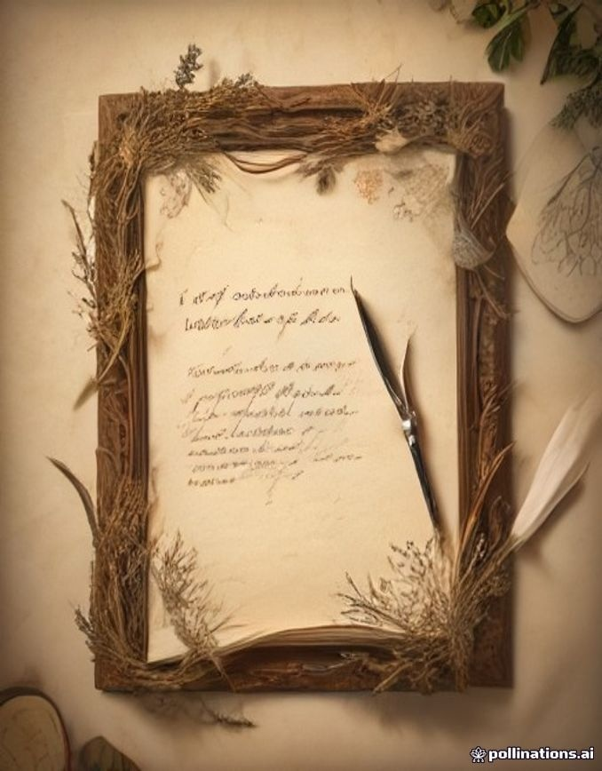

300 DPI Printable PDF/JPGVintage Botanical Herbarium
19th-century pressed woodland ferns, apothecary wildflower receipts, medicinal herb manuscripts, and delicate flora on authentic distressed parchment.
- ✓ Authentic dried flora & botanical tags
- ✓ Stained parchment & distressed paper textures
- ✓ Ideal for nature folios & herbarium diaries